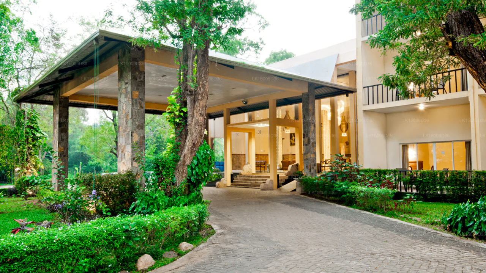
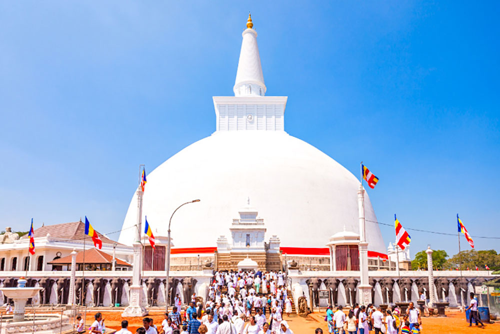
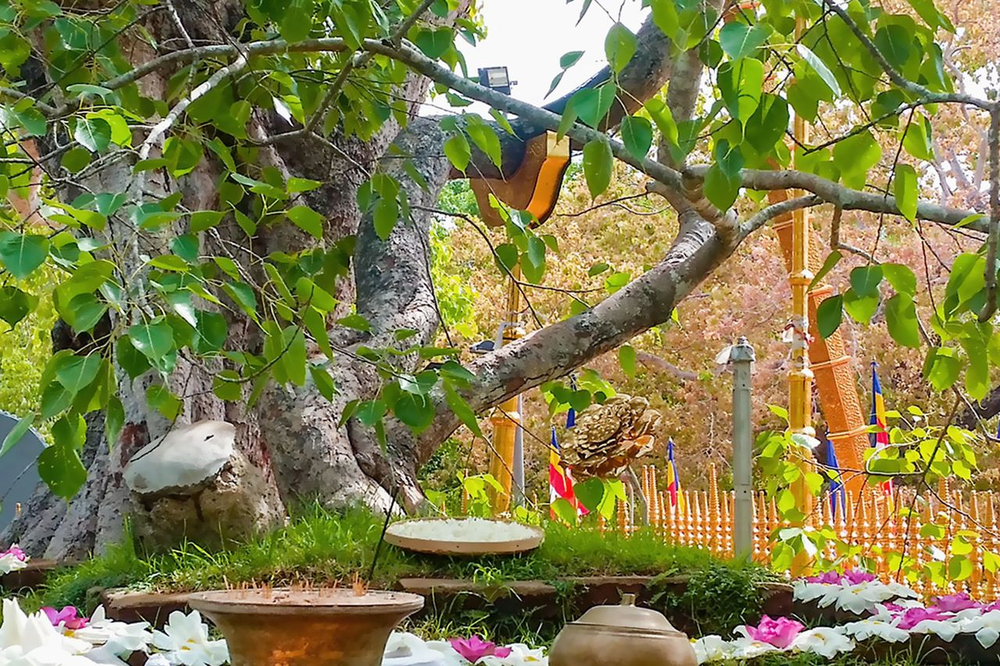

Sacred Buddhist Capital & Sri Lanka’s First Kingdom
Anuradhapura is more than ruins—it's where Sri Lanka's heart still beats strong. Walk in the footsteps of ancient kings, meditate beneath sacred Bodhi trees, and witness living traditions that have endured for over two millennia. This sacred city doesn’t just show you history—it lets you feel it in every stone, every prayer, and every sunset over ancient stupas.
As the island’s first capital and one of the world’s oldest continuously inhabited cities, Anuradhapura stands as a UNESCO World Heritage Site. It whispers stories from over 2,500 years ago—stories of powerful kings, remarkable architecture, and a deep spiritual culture that shaped Sri Lanka’s identity.
Anuradhapura is not just archaeological—it remains an active Buddhist pilgrimage site. Devotees dressed in white offer flowers and prayers at massive stupas and sacred shrines, creating a serene and spiritual atmosphere felt by visitors from around the world.
One of the city’s greatest treasures is the Sri Maha Bodhi, believed to be the oldest recorded tree in the world. It was grown from a sapling of the very tree under which the Buddha attained enlightenment—making it one of the holiest pilgrimage sites in Buddhism.

• Majestic stupas such as Ruwanweliseya and Jetavanaramaya tower over the landscape.
• Ancient monasteries and reservoirs showcase impressive engineering and devotion.
• Wildlife such as peacocks roam freely near sacred sites, adding natural charm.
• The nearby countryside reveals the agricultural and spiritual life of the region.